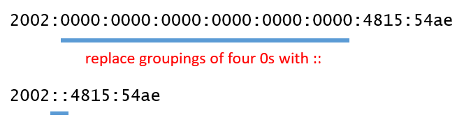

Assigning an IP Address 分配IP地址 <<
Previous Next >> Classful Vs Classless Addressing Subnet and CIDR
IPv6
Internet protocol version 6 was developed to provide more public IP addresses, because the IPv4 public addressing space was running out as a result of the proliferation of network devices in our lives. Now, our cellphones, laptops, tablets, thermostats, refrigerators, TVs, and more are all being connected to the network and they all need IP addresses. Due to the 32-bit addresses used by IPv4, we were limited to 4.2 billion IP addresses, but by increasing the address space to 128-bit addresses in IPv6, the number of IP addresses available has increased to 340 undecillion addresses. This is 5 x 1028 IPv6 addresses for every person on the planet, including children.
IPv5 was designed, but eventually skipped in implementation, because it was only a 64-bit address and some feared it didn’t provide a large enough pool of available IP addresses. This experimental protocol was abandoned, but many of its concepts were incorporated into the IPv6 protocol, as well as some other protocols.
Internet協議版本6的開發是為了提供更多的公共IP地址，因為由於我們生活中網絡設備的激增，IPv4公共尋址空間已耗盡。 現在，我們的手機，筆記本電腦，平板電腦，恆溫器，冰箱，電視等已全部連接到網絡，並且它們都需要IP地址。 由於IPv4使用32位地址，因此我們只能使用42億個IP地址，但是通過將地址空間增加到IPv6中的128位地址，可用的IP地址數量已增加到340個十億位地址。 這是地球上每個人（包括孩子）的5 x 1028 IPv6地址。
IPv5是經過設計的，但最終被跳過，因為它只是一個64位地址，並且有人擔心它不能提供足夠大的可用IP地址池。 該實驗性協議已被放棄，但其許多概念以及其他一些協議已合併到IPv6協議中。
|
Number of Addresses
|
|
IPv4
|
232
|
4,294,967,296
|
|
IPv6
|
2128
|
340,282,366,920,938,000,000,000,000,000,000,000,000
|
Benefits of IPv6 IPv6的好處
IPv6 has many benefits over IPv4, the biggest of which is the number of available IP addresses. In IPv6, there is no broadcast provided, which frees up IP addresses, reduces the amount of traffic sent over the network, and increases bandwidth. Also, IPv6 doesn’t allow packets to be fragmented (broken into pieces) during transmission. This is handled by the protocol by resizing the maximum transmission unit size each time a session is created between two devices.
A major benefit of IPv6 is that it allows for dual stack implementation, which means that IPv4 and IPv6 can run simultaneously on a device and provide service to the device from either protocol without conflict. IPv6 can also run on top of IPv4 as a tunneled protocol, thereby allowing it to run over older devices, as well.
Lastly, the packet headers in IPv6 are much simpler than in IPv4. In IPv4, there are 12 fields that must be completely filled out (adding to overhead and complexity), but in IPv6 this was reduced to the bare minimum of five fields. This includes fields such as source and destination address, as well as quality of service priority.
與IPv4相比，IPv6有很多好處，其中最大的好處就是可用IP地址的數量。在IPv6中，沒有提供廣播，這釋放了IP地址，減少了通過網絡發送的流量，並增加了帶寬。另外，IPv6不允許在傳輸過程中將數據包分段（分成碎片）。協議通過每次在兩個設備之間創建會話時調整最大傳輸單元大小來解決此問題。
IPv6的主要優點在於它允許雙協議棧實現，這意味著IPv4和IPv6可以在設備上同時運行，並可以從任一協議向設備提供服務而不會發生衝突。 IPv6還可以作為隧道協議在IPv4之上運行，從而也可以在較舊的設備上運行。
最後，IPv6中的數據包頭比IPv4中的數據包頭簡單得多。在IPv4中，必須完全填寫12個字段（增加了開銷和復雜性），但是在IPv6中，此字段減少到最少五個字段。這包括諸如源地址和目標地址以及服務質量優先級之類的字段。
IPv6 Address Structure IPv6地址結構
While IPv6 has numerous improvements over IPv4, the most notable thing about IPv6 that people see is the format of the address. Instead of the dotted-decimal notation we used in IPv4 with addresses like 192.168.1.1, IPv6 uses eight groupings of four hexadecimal digits in each group. Each group is then broken apart by a colon (:). An example of an IPv6 address is 2002:0000:0000:0000:0000:0000:4815:54ae.
A hexadecimal digit allows for counting from zero to 15 using the digits 0-9, then the letters A through F. Each hexadecimal digit replaces four binary digits (or four 1s and 0s), allowing us to write an IPv6 address using (at most) 32 hexadecimal digits.
Luckily, the creators of IPv6 allowed for a shorthand. First, anytime there are leading zeros, they can be dropped. This is equivalent to dropping the leading zeros in the number 0010 to 10. The numbers are equivalent, as long as the zeros are in front of the other digits. The second shorthand technique involves several groupings of four zeros. When multiple groupings of four zeros are present, they can be represented by a double colon (::). Note that you can only use the double colon once per address, because the only way to know how many sets of zeros you’ve replaced with the double colon is to compare the shorthand address with the total number of bits available.
儘管IPv6相對於IPv4進行了許多改進，但是人們看到的關於IPv6的最值得注意的事情是地址的格式。 IPv6不是在IPv4中使用像192.168.1.1這樣的地址使用的點分十進製表示法，而是在每個組中使用四個十六進制數字組成的八組。然後，每個組用冒號（:)分隔。 IPv6地址的示例是2002：0000：0000：0000：0000：0000：0000：4815：54ae。
十六進制數字允許使用數字0-9從0到15進行計數，然後使用字母A到F。每個十六進制數字都替換了四個二進制數字（或四個1和0），從而允許我們使用（最多為）32個十六進制數字。
幸運的是，IPv6的創建者允許使用簡寫形式。首先，只要有前導零，就可以將其丟棄。這等效於將數字0010中的前導零刪除為10。這些數字是等效的，只要零在其他數字的前面即可。第二種速記技術涉及四個零的幾個分組。當存在四個零的多個分組時，可以用雙冒號（：:)表示。請注意，每個地址只能使用雙冒號一次，因為要知道用雙冒號替換了多少個零集的唯一方法是將速記地址與可用位數進行比較。
EXAMPLE
2002:0000:0000:0000:0000:0000:0000:4815:54ae can be rewritten. One way to rewrite this address is to eliminate the leading zeros.
2002：0000：0000：0000：0000：0000：0000：0000：4815：54ae可以重寫。 重寫此地址的一種方法是消除前導零。
By eliminating the leading zeros, 2002:0000:0000:0000:0000:0000:0000:4815:54ae becomes 2002:0:0:0:0:0:0:4815:54ae.
Alternatively, this address can be rewritten using a double colon (::) in place of a multiple grouping of four 0s.
通過消除前導零，2002：0000：0000：0000：0000：0000：0000：4815：54ae變為2002：0：0：0：0：0：0：0：4815：54ae。
或者，可以使用雙冒號（：:)代替四個0的多個分組來重寫此地址。

By replacing multiple groupings of four 0s with a double colon, 2002:0000:0000:0000:0000:0000:0000:4815:54ae becomes 2002::4815:54ae.
通過用雙冒號替換四個0的多個分組，2002：0000：0000：0000：0000：0000：0000：0000：4815：54ae變為2002 :: 4815：54ae。
EXAMPLE
2009:0123:4040:0000:0000:0000:000A:100B can be written by both eliminating leading zeros and using double colons.
可以通過消除前導零和使用雙冒號來編寫2009：0123：4040：0000：0000：0000：000A：100B。
2009:0123:4040:0000:0000:0000:000A:100B becomes 2009:123:4040::A:100B.
As you can see, the IPv6 addresses are more complex than their IPv4 counterparts, but over time, you will get used to seeing how they are written, and what the different notation indicates.
2009：0123：4040：0000：0000：0000：000A：100B變為2009：123：4040 :: A：100B
如您所見，IPv6地址比其對應的IPv4地址要復雜得多，但是隨著時間的流逝，您將習慣於看到它們的寫法以及不同符號的含義。
IPv6 Data Flows IPv6資料流向圖
Data flows in IPv6 are similar to those in IPv4. In fact, unicast and multicast work identical to their IPv4 counterparts. But, because there is no broadcast in IPv6, it has been replaced with “anycast.” Anycast allows data to travel from a single source device to the nearest of multiple, but specific, devices on a network. Anycasting is designed to let one host initiate the efficient updating of router tables for a group of hosts. IPv6 can determine which gateway host is closest and sends the packets to that host as though it were a unicast communication. In turn, that host can anycast to another host in the group until all routing tables are updated.
IPv6中的數據流類似於IPv4中的數據流。 實際上，單播和多播的工作方式與IPv4相同。 但是，由於IPv6中沒有廣播，因此已將其替換為“任何廣播”。 Anycast允許數據從單個源設備傳輸到網絡上多個（但特定的）設備中最接近的一個。 任意廣播旨在讓一個主機為一組主機啟動路由器表的有效更新。 IPv6可以確定哪個網關主機最接近，並將數據包發送到該主機，就好像它是單播通信一樣。 相應地，該主機可以向組中的另一台主機任意廣播，直到更新所有路由表為止。
Assigning an IP Address 分配IP地址 <<
Previous Next >> Classful Vs Classless Addressing Subnet and CIDR